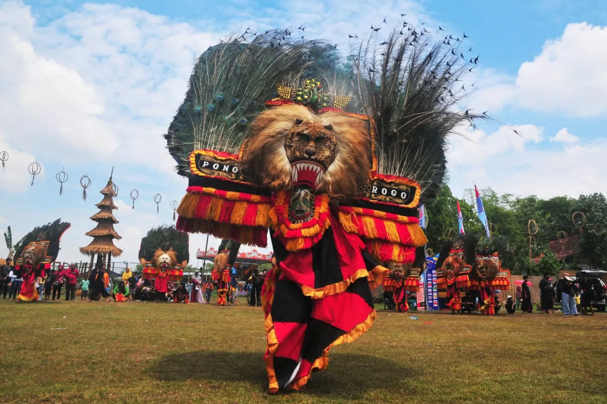

Pada zaman dahulu hiduplah Ki Ageng Kutu di Ponorogo. Ia merasa kecewa terhadap pemerintahan kerajaan Majapahit. Sebagai bentuk kritik, ia menciptakan pertunjukan Reog.
Pertunjukan ini menampilkan topeng singa besar yang disebut Singa Barong. Hingga sekarang Reog Ponorogo menjadi salah satu kesenian terkenal dari Jawa Timur.
← Kembali ke BerandaSiapakah tokoh yang menciptakan kesenian Reog?